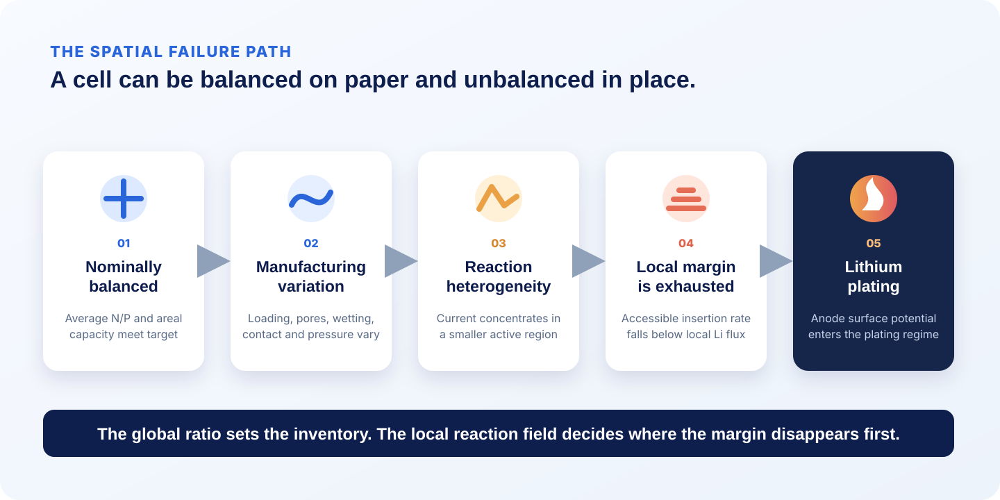
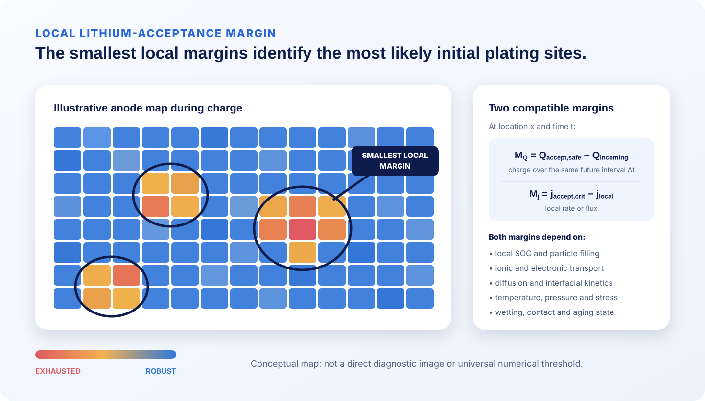
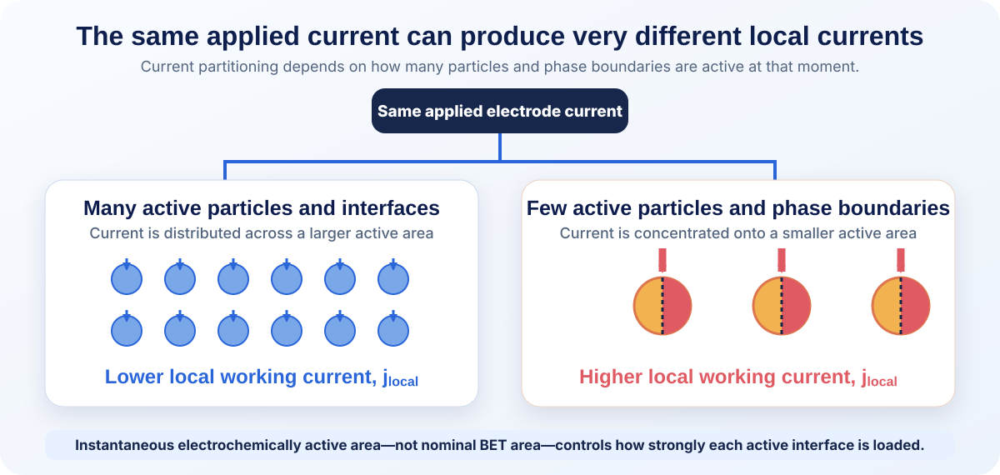
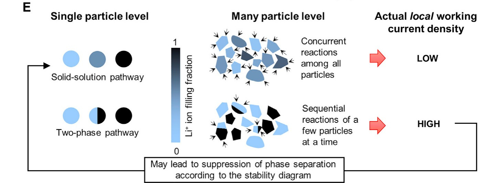
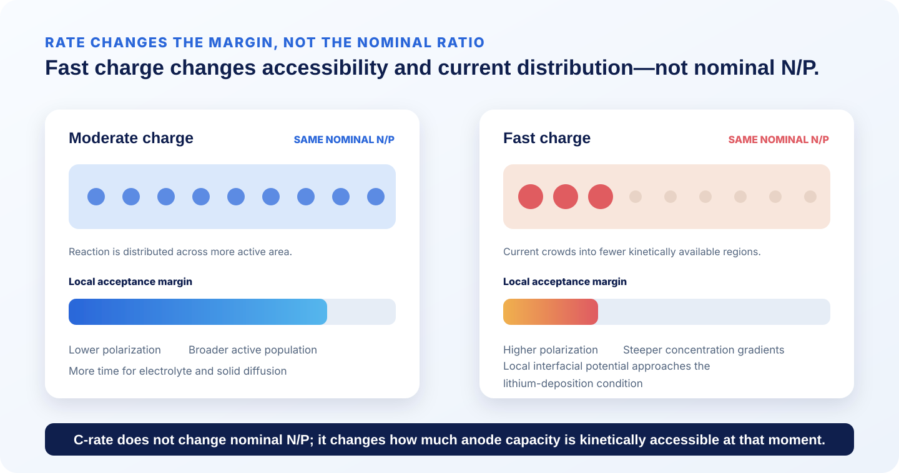
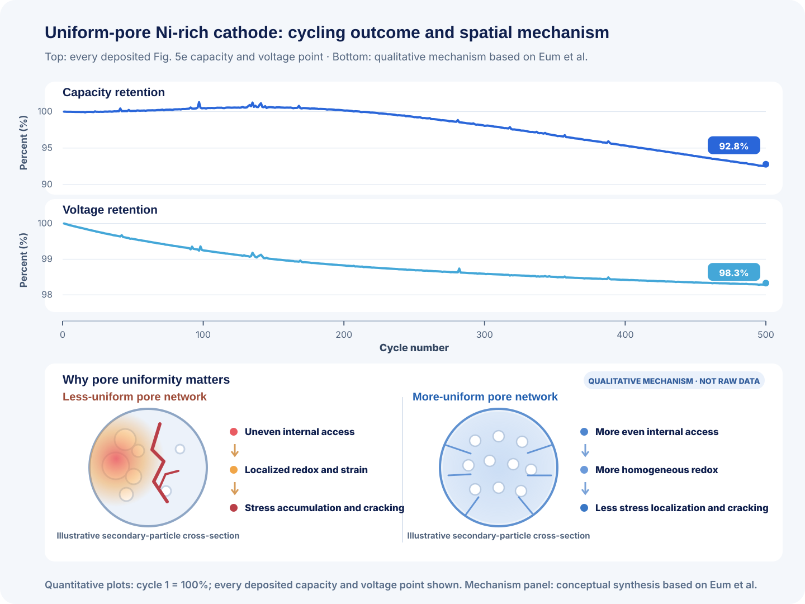

The battery industry has traditionally discussed electrode balancing using a single number: the N/P ratio. It is useful, measurable, and deeply embedded in cell design. But it compresses a spatially distributed electrochemical system into one area-averaged value.
Electrode balancing begins with inventory, but its practical fast-charge and aging limits are set by spatial accessibility and reaction uniformity. A low nominal N/P can be the primary design cause: it reduces stoichiometric headroom everywhere and makes the local plating condition easier to reach. Yet N/P alone cannot show whether that headroom is wetted, connected, kinetically accessible, or uniformly used.
1. What N/P Ratio Actually Represents
Nominal N/P is the practical reversible areal capacity of the negative electrode divided by that of the positive electrode, measured under stated voltage, rate, temperature, and formation conditions. It connects loading, active-material fraction, specific capacity, and lithium inventory in one auditable metric—quantities available well before large-format validation.
A ratio above 1 ordinarily gives an insertion anode more low-rate capacity than the cathode should deliver. The margin reduces average anode utilization, but extra coating adds mass, volume, and interphase area. The earlier Winigen N/P ratio guide develops this tradeoff.
The limitation is hidden in areal: the calculation assumes that averaged capacities are meaningfully available throughout the cell. Real electrodes satisfy that assumption only approximately.
2. Why Real Cells Are Never Uniform
2.1 Through-Thickness Transport
A porous electrode contains two interpenetrating transport networks. Lithium ions move through electrolyte-filled pores from the separator side, while electrons are supplied from the current collector through the active material and conductive network. Because ionic and electronic access originate from opposite sides of the electrode, even a compositionally uniform coating can develop a nonuniform through-thickness reaction distribution.
Porous-electrode theory treats the electrode as coupled solid and electrolyte phases, with electronic current carried through the solid network, ionic current carried through the electrolyte-filled pores, and charge transferred locally between them through interfacial reaction. This framework was established for insertion batteries in the Doyle–Fuller–Newman model and underlies modern analysis of through-thickness reaction distributions.[1]
In the normalized coordinate used in the figure below, the separator occupies x = 0 to 0.26, the dashed line at x = 0.26 marks the separator/electrode interface, and x = 1 corresponds to the current collector. The separator contains no active material, so the local reaction rate is zero in that region.
The local reaction rate, jC, identifies where charge-transfer reaction occurs. The ionic current density in the electrolyte, i2, represents the portion of current still carried by ions through the pore phase. It is highest as it enters the porous electrode and decreases as ionic current is transferred into electrochemical reaction. Under the coordinate and sign convention used here, the local reaction rate is proportional to the spatial loss of electrolyte-phase ionic current:
2.2 Four Limiting Reaction Profiles

Building on this framework, Chen and co-workers derived four limiting transport cases for short-time, low-overpotential operation.[2]
- Weak ionic conduction. Ions cannot penetrate deeply into the pore network before reacting. The ionic-current profile therefore falls rapidly near the separator, and the reaction rate is concentrated at the separator-facing side of the electrode.
- Weak electronic conduction. Ions can travel through much of the electrode, but electron access is strongest near the current collector. Ionic current remains high across most of the thickness and decreases sharply only near the current-collector boundary, where reaction becomes concentrated.
- Both transport networks are weak. Reaction can become localized near both boundaries while the middle of the electrode remains comparatively underutilized. In this case, ionic current decreases near the separator, changes relatively little through the central region, and decreases again near the current collector.
- Both transport networks are sufficiently conductive. Reaction is distributed more evenly through the electrode thickness. A similar amount of ionic current is transferred into reaction in each small electrode slice, producing an approximately uniform jC profile and a nearly linear decrease in i2.
These four profiles are limiting theoretical cases rather than universal electrode shapes. Real reaction distributions depend on effective ionic and electronic conductivity, electrode thickness, porosity, tortuosity, particle size, specific surface area, interfacial kinetics, state of charge, and operating rate. Their value is conceptual: they show that spatial reaction nonuniformity can arise even when the electrode composition and average loading are nominally uniform.

2.3 In-Plane Current Distribution
Through-thickness transport is only one component of the reaction field. In plane, finite current-collector resistance and tab geometry produce lateral solid-phase potential differences that can redistribute electrochemical current across the electrode area. Wang and co-workers derived this in-plane reaction distribution and showed its dependence on cell dimensions, current-collector properties, and tabbing design.[3] Temperature, stack pressure, wetting, coating variation, registration, and edge geometry add further lateral heterogeneity.

2.4 Manufacturing Uniformity Versus Reaction Uniformity
Manufacturing and operation add variation on top of this intrinsic asymmetry:
- Microstructure: thickness, density, pore connectivity, tortuosity, and particle morphology set transport distances and accessible surface.
- Networks and interfaces: carbon, binder, particle contact, separator compression, and wetting determine where ions and electrons can arrive.[4], [5]
- Cell environment: pressure and temperature alter contact, transport, kinetics, and heat generation.
3. Defining the Local Lithium-Acceptance Margin
The local lithium-acceptance margin describes how close a particular anode region is to the lithium-plating condition under a specified operating state. It can be expressed in two complementary ways: as the amount of charge the region can still accept over a defined time interval, or as the additional intercalation flux it can sustain at that moment.
A graphite region may still contain unused stoichiometric capacity yet be unable to accept lithium at the imposed rate. Electrolyte transport, charge-transfer kinetics, or solid-state diffusion can make part of that capacity temporarily inaccessible. In this sense, a region can become kinetically constrained before it is chemically full.
The first expression is a charge margin: both terms represent charge over the same future interval, Δt. The second is a rate margin: both terms are local interfacial fluxes or current densities. Regions with the smallest margin are the most likely sites for initial lithium deposition, although nucleation barriers, surface condition, and measurement sensitivity also affect when plating becomes observable.

Heterogeneity Is Dynamic, Not Merely Structural
Reaction heterogeneity does not arise only from fixed differences in coating thickness, porosity, or transport. The population of active particles can also change during charge and discharge.
Agrawal and Bai tracked five graphite particles, P1–P5, during lithiation and delithiation at 0.1C and 1C.[6] The horizontal coordinate in the figure below is the lithiation or delithiation fraction of each particle, while the vertical axis is its inferred interfacial working current density. The curves therefore show how strongly each particle reacts as it moves through different graphite staging regimes. The blue-shaded region I corresponds to solid-solution behavior; regions II and III are phase-transforming staging regimes.
In the solid-solution region, many particles can change lithium content concurrently. The imposed current is distributed across a comparatively large active population, and the local working current density remains low. When particles enter phase-transforming regimes, reaction becomes concentrated at moving phase boundaries. Individual particles begin transforming at different times, so a smaller and continuously changing subset of particles can carry a disproportionate share of the total current.
This explains the narrow peaks and particle-to-particle differences in panels A–D. They are not experimental noise or simply variations in particle size. They reflect the sequential activation of particles and the evolution of phase boundaries during graphite staging. Lithiation and delithiation also follow different particle sequences and are therefore not exact mirror images.

Increasing the imposed rate from 0.1C to 1C raised the local working current density, but by less than the tenfold increase in global current. The electrode accommodated part of the additional current by activating more particles and phase boundaries, rather than increasing every particle’s local current in direct proportion. The inferred working current densities were still two to three orders of magnitude above an average calculated using the total BET surface area, showing that only a limited fraction of the nominal surface carried substantial current at any given moment.


The broader implication is important: an electrode-level C-rate does not specify the current experienced by an individual particle or active phase boundary. Local reaction intensity depends on how many particles are active, which transformation pathway they follow, and how the active population evolves with state of charge and applied current.
4. Fast Charging and Silicon Make the Margin Dynamic
Increasing C-rate does not change the nominal N/P ratio. Electrode masses, practical low-rate capacities, and geometric overlap remain the same. What changes is how much of the anode capacity can be accessed within the available charging time—and how evenly the imposed current is distributed.
Higher current strengthens electrolyte concentration gradients, ionic potential losses, charge-transfer polarization, and solid-state diffusion gradients. These effects can concentrate reaction in a smaller active area and reduce the local lithium-acceptance margin even while substantial average anode capacity remains unused.
The relevant quantity is the local graphite potential relative to the adjacent electrolyte, often represented in porous-electrode models by φs − φe, where φs is the electric potential in the solid electrode and φe is the potential in the adjacent electrolyte. During fast charging, local polarization can bring the graphite interface to the lithium-deposition condition, conventionally discussed as approximately 0 V versus Li/Li+. Actual plating onset also depends on nucleation overpotential, surface condition, SEI properties, and competition between lithium deposition and graphite intercalation.
Spatially resolved fast-charge studies support this local interpretation. Tanim and co-workers observed heterogeneous lithium-plating behavior during extreme fast charging, showing that deposition and its subsequent consequences were not distributed uniformly across the electrode or cell.[7] A cell-average current or voltage limit therefore does not imply that every anode region retains the same plating margin. Low temperature narrows the margin further by slowing ionic transport, charge transfer, and solid diffusion.[8]

Silicon makes this spatial margin even more dynamic. Expansion changes particle contact, pore geometry, pressure, binder stress, and interphase area. Cycling can fracture and reform the SEI, consume lithium and electrolyte, and increase local impedance. Even with a uniform silicon concentration, differences in binder topology, conductive connectivity, wetting, pressure, and pore volume can produce nonuniform expansion and contact loss.
As resistance grows in one region, current redistributes toward less resistive neighboring regions. Those regions then experience higher utilization, stronger mechanical demand, and potentially faster degradation. The local acceptance-margin map therefore evolves not only during a charge but also from cycle to cycle.
A higher N/P ratio may reduce average anode utilization, but it does not guarantee uniform silicon use.[9] For silicon-rich anodes, reported N/P values are difficult to interpret unless the capacity basis specifies lithiation or delithiation, cycle number, voltage window, test rate, and prelithiation condition. Expansion, post-calendering porosity, binder system, applied pressure, E/C ratio, and formation protocol complete the necessary context.
Adding anode capacity can increase nominal headroom, but it cannot correct a dry pore network, severe ionic bottleneck, locally resistive interface, or concentrated current field. Fast-charge and silicon-anode design must therefore treat N/P ratio, transport, mechanics, wetting, temperature, formation, and charge protocol as a coupled problem.
5. Aging Turns a Static Balance into a Moving Target
N/P ratio is usually defined at beginning of life, but the local lithium-acceptance margin is not fixed. SEI growth, pore blockage, electrolyte redistribution, contact loss, gas generation, swelling, particle damage, and cyclable-lithium loss alter the spatial distribution of impedance and accessible capacity.
These changes can create a feedback loop. A region that becomes more resistive carries less current, forcing other lower-resistance regions to carry more. Their local utilization, heat generation, and degradation then increase, causing the reaction field to shift over time. A cell can therefore retain the same nominal electrode masses while developing a progressively less uniform reaction field and a smaller local plating margin.

6. Why Manufacturing Matters More Than People Think
Electrode manufacturing converts a material formulation into a porous, electronically connected, mechanically supported electrochemical structure. Mixing, coating, drying, calendering, slitting, filling, wetting, and formation each influence the final electrode and cell response.[12]
When spatial heterogeneity limits performance, manufacturing precision becomes electrochemical design. Coating, density, pore structure, calendering, conductive networks, binder placement, wetting, registration, pressure, and thermal contact all shape the reaction field.
Yet the objective is not blindly to make every constituent constant through thickness. Cheng and co-workers manufactured approximately 100 µm LFP electrodes with the same total mass, the same overall 90:5:5 active-material/carbon/binder ratio, and similar overall porosity, but with different through-thickness distributions. Their best trapezoidal design concentrated active material in the center and enriched carbon and binder near both electrode boundaries. At 1C, this Trapezoid-3 architecture delivered about 120 mAh g−1 of active material, compared with about 43 mAh g−1 for the uniform 90:5:5 electrode. In volumetric power–energy space, it retained roughly 630 W L−1 at 500 Wh L−1, compared with about 100 W L−1 for the carbon-richer Uniform-80 design.[13]


No trapezoidal profile is universally optimal; performance depends on chemistry, thickness, rate, and objective. The durable lesson is that where material is placed can matter even when overall loading and nominal cell design appear similar—and, in the case of Uniform-90 versus Trapezoid-3, even when total composition is held constant.
The variables below are routinely controlled as manufacturing quantities, but each also has a local electrochemical consequence.[12]
| Manufacturing variable | Local electrochemical consequence | Useful control or evidence |
|---|---|---|
| Coating loading and thickness | Local capacity ratio, ionic path length, and propensity for reaction redistribution | Cross-web and down-web loading/thickness maps; areal-capacity distribution |
| Density, porosity, tortuosity | Electrolyte inventory, ionic resistance, wetting time, and accessible surface | Calendering window, density/porosity map, pore-size and tortuosity characterization |
| Particle-size distribution | Packing, pore topology, surface area, diffusion length, and particle-to-particle reaction heterogeneity | D10/D50/D90, morphology, agglomeration, and electrode cross-sections |
| Carbon and binder placement | Electronic percolation, adhesion, pore blocking, and local active-surface access | Mixing controls, cross-sectional mapping, peel strength, resistivity |
| Electrolyte filling and wetting | Local ionic resistance, inactive dry regions, and current redistribution | E/C ratio, vacuum profile, rest time, saturation or imaging evidence |
| Stack pressure | Particle contact, separator compression, pore geometry, silicon swelling response | Applied pressure, fixture design, spatial pressure map, thickness evolution |
| Separator uniformity | Local ionic resistance from thickness, porosity, wetting, or compression variation | Thickness/porosity maps, Gurley or permeability data, compression response |
| Tab and collector architecture | In-plane potential drop, current crowding, and local heat generation | Tab geometry, weld resistance, collector thickness, potential/thermal mapping |
| Registration and anode overhang | Local cathode/anode capacity mismatch and edge current concentration | Vision inspection, edge-by-edge overhang, reject criteria |
| Formation protocol and thermal history | SEI/CEI resistance, gas, lithium loss, and kinetic nonuniformity | Thermal map, formation trace, dQ/dV, EIS/DCIR, swelling and degassing data |
Manufacturing improvements can increase effective utilization without changing nominal N/P: more of the designed capacity remains accessible, and its use is better distributed.
7. Beyond N/P Ratio: A Better Electrode-Balancing Framework
N/P remains the correct first calculation, but a spatial framework extends it into three validation questions:
- Inventory: Is the total practical negative-electrode capacity appropriately balanced against the positive electrode?
- Accessibility: How much of that capacity can be reached within the intended SOC, current, temperature, pressure, and aging state?
- Uniformity: How unevenly are current, SOC, polarization, temperature, stress, and degradation distributed across the cell?
Validation should match the question. Inventory requires practical areal-capacity measurements and a clearly stated capacity basis. Accessibility requires testing under the intended rate, temperature, pressure, SOC window, and aging condition. Uniformity requires spatially sensitive evidence such as loading and density maps, porosity and tortuosity characterization, wetting and pressure records, local potential or thermal mapping where feasible, plating diagnostics, matched-SOC impedance, and location-specific teardown.
Where inside the cell is the local lithium-acceptance margin smallest?
8. From Materials to Finished Electrodes
Spatial reaction uniformity is largely established by material, electrode, and cell design. Battery-management strategies can protect the available margin through current, temperature, and SOC control, but they cannot fully correct a poorly wetted, mechanically nonuniform, or transport-limited electrode.
Material grade influences particle size, morphology, practical capacity, first-cycle efficiency, surface chemistry, and processing behavior. Electrode processing translates those properties into practical loading, density, porosity, conductive connectivity, adhesion, and wetting pathways.
Winigen Materials supplies cathode and anode active materials, graphite and silicon-based anode materials, lithium salts, solvents, additives, custom electrolyte support, and finished electrodes. This allows development teams to connect material selection with practical formulation, loading, density, porosity, wetting, and cell-validation requirements rather than evaluating powders in isolation.
For full-cell and pouch-cell development, chemistry and N/P ratio should therefore be accompanied by a controlled design record: material lot, capacity basis, formulation, areal loading, density, porosity, particle-size distribution, electrolyte quantity and composition, wetting process, formation protocol, applied pressure, and operating window.
References and Further Reading
Figure-use note: The conceptual diagrams, Chen teaching figure, Cheng design key, and Eum raw-data replot are original Winigen Materials graphics based on the cited literature. The Agrawal–Bai and Cheng literature panels are reproduced or adapted from CC BY 4.0 sources, with cropping, panel separation, and annotation disclosed in the captions. No Nature Energy publisher figure is reproduced; only the authors’ deposited numerical data are replotted.
- Doyle, M.; Fuller, T. F.; Newman, J. Modeling of Galvanostatic Charge and Discharge of the Lithium/Polymer/Insertion Cell. Journal of The Electrochemical Society 140, 1526–1533 (1993). doi:10.1149/1.2221597.
- Chen, Z.; Danilov, D. L.; Eichel, R.-A.; Notten, P. H. L. On the reaction rate distribution in porous electrodes. Electrochemistry Communications 121, 106865 (2020). doi:10.1016/j.elecom.2020.106865.
- Wang, Z.; Danilov, D. L.; Eichel, R.-A.; Notten, P. H. L. About the In-Plane Distribution of the Reaction Rate in Lithium-Ion Batteries. Electrochimica Acta 475, 143582 (2024). doi:10.1016/j.electacta.2023.143582.
- Lautenschlaeger, M. P. et al. Understanding Electrolyte Filling of Lithium-Ion Battery Electrodes on the Pore Scale Using the Lattice Boltzmann Method. Batteries & Supercaps (2022). doi:10.1002/batt.202200090.
- Kaden, N.; Schlimbach, R.; Rohde Garcia, A.; Droeder, K. A Systematic Literature Analysis on Electrolyte Filling and Wetting in Lithium-Ion Battery Production. Batteries 9, 164 (2023). doi:10.3390/batteries9030164.
- Agrawal, S.; Bai, P. Dynamic interplay between phase transformation instabilities and reaction heterogeneities in particulate intercalation electrodes. Cell Reports Physical Science 3, 100854 (2022). doi:10.1016/j.xcrp.2022.100854.
- Tanim, T. R. et al. Heterogeneous Behavior of Lithium Plating during Extreme Fast Charging. Cell Reports Physical Science 1, 100114 (2020). doi:10.1016/j.xcrp.2020.100114.
- Waldmann, T. et al. Li plating as unwanted side reaction in commercial Li-ion cells: A review. Journal of Power Sources 384, 107–124 (2018). doi:10.1016/j.jpowsour.2018.02.063.
- Luo, M. et al. Examining Effects of Negative to Positive Capacity Ratio in Three-Electrode Lithium-Ion Cells with Layered Oxide Cathode and Si Anode. ACS Applied Energy Materials 5, 5513–5518 (2022). doi:10.1021/acsaem.2c00665.
- Eum, D. et al. Uniform pore structure enables negligible degradation in undoped and uncoated Ni-rich cathodes. Nature Energy 11, 593–602 (2026). doi:10.1038/s41560-026-01988-w.
- Eum, D. et al. Data from: Uniform pore structure enables negligible degradation in undoped and uncoated Ni-rich cathodes. Dryad (2026). doi:10.5061/dryad.mpg4f4rf3.
- Liu, Y.; Zhang, R.; Wang, J.; Wang, Y. Current and Future Lithium-Ion Battery Manufacturing. iScience 24, 102332 (2021). doi:10.1016/j.isci.2021.102332.
- Cheng, C.; Drummond, R.; Duncan, S. R.; Grant, P. S. Extending the energy-power balance of Li-ion batteries using graded electrodes with precise spatial control of local composition. Journal of Power Sources 542, 231758 (2022). doi:10.1016/j.jpowsour.2022.231758.
Discuss Materials, Finished Electrodes, and Cell Validation
Share your electrode chemistry, capacity basis, target loading, N/P ratio, porosity, silicon fraction, electrolyte system, charge target, pressure condition, and cell format. Winigen Materials can help translate these inputs into material, electrode, electrolyte, and validation specifications suited to the intended operating window.
Contact Winigen MaterialsAll original Winigen Materials diagrams and visualizations on this page are © Winigen Materials. They may not be reproduced, modified, or redistributed without permission.